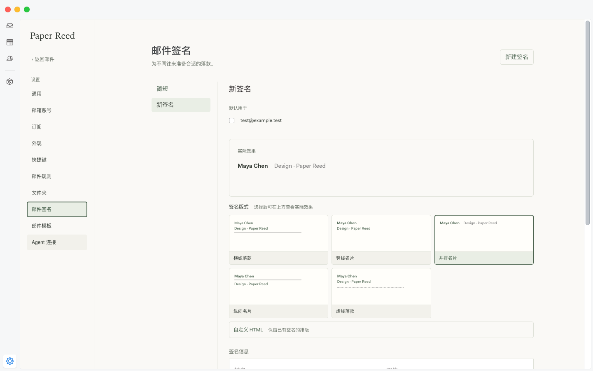
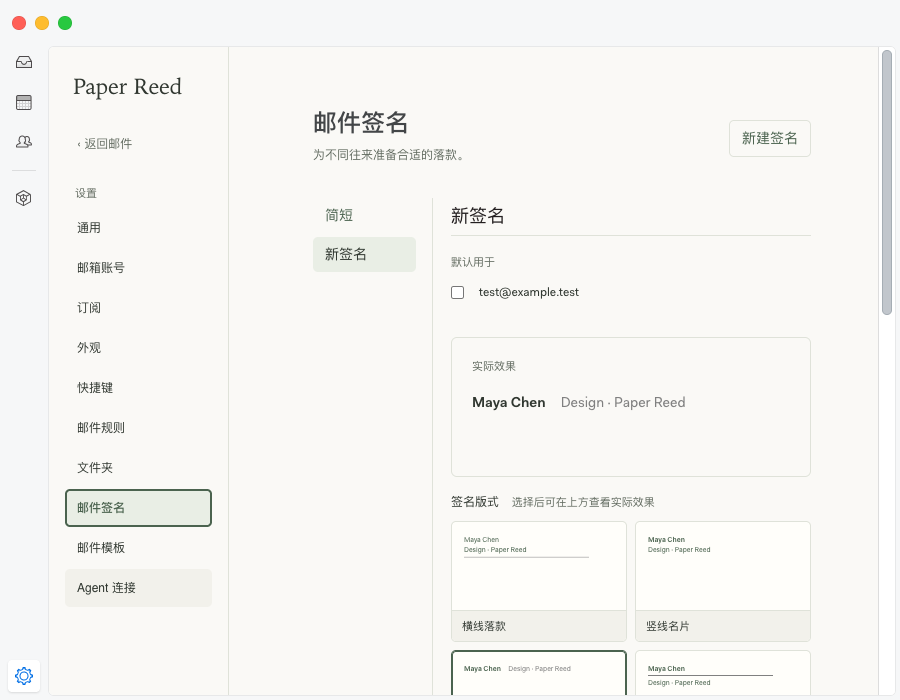
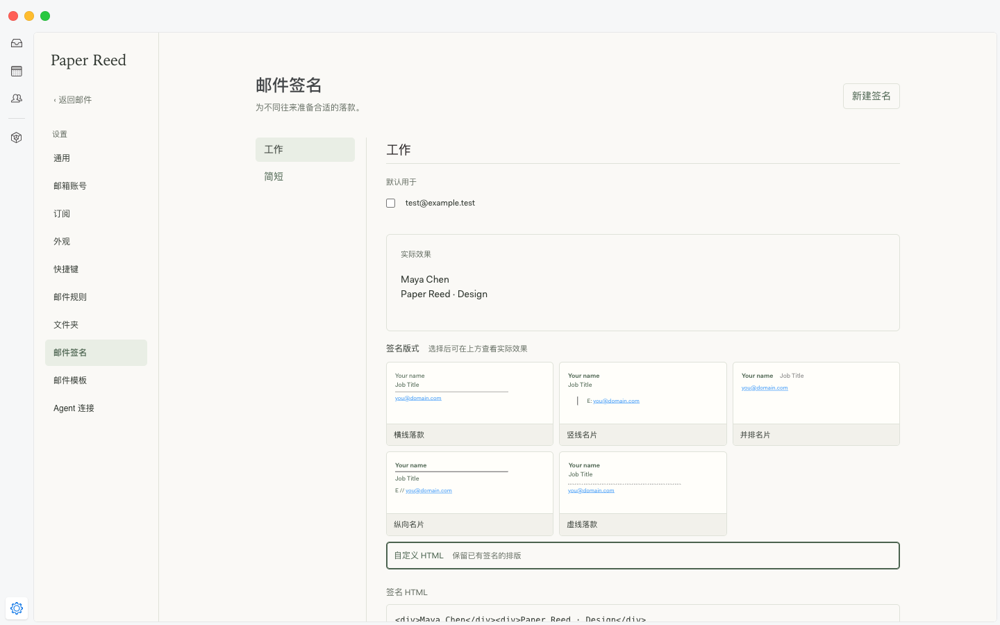
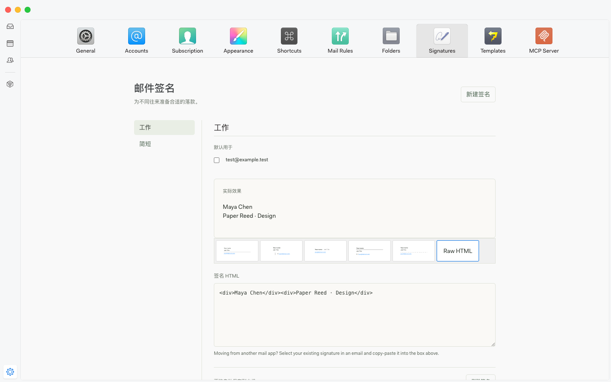

<!doctype html><html lang="zh-CN"><meta charset="utf-8"><meta name="viewport" content="width=device-width,initial-scale=1"><title>Paper Reed 设置导航与签名版式</title><style>:root{--foreground:#303730;--muted-foreground:#626b60;--primary:#4b634f;--secondary:#f2f1eb;--border:#dfe2d9;--radius:6px;--font-sans:-apple-system,sans-serif}body{margin:0;font:13px/1.6 var(--font-sans);color:var(--foreground)}nav{display:flex;flex-wrap:wrap;gap:6px;margin-bottom:12px}button{font:inherit;background:transparent;border:1px solid var(--border);border-radius:var(--radius);padding:5px 10px;color:inherit;cursor:pointer}button[aria-pressed=true]{background:var(--secondary);color:var(--primary)}button:focus-visible{outline:2px solid var(--primary)}[hidden]{display:none}figure{margin:0}img{display:block;width:100%;border:1px solid var(--border);border-radius:var(--radius);box-sizing:border-box}figcaption,footer{font-size:12px;color:var(--muted-foreground);margin:6px 0}a{color:var(--primary)}</style><nav><button data-page="navigation-templates" aria-pressed="true">设置导航与签名版式</button><button data-page="navigation-compact" aria-pressed="false">900px 小窗口</button><button data-page="signatures" aria-pressed="false">自定义 HTML</button><button data-page="before" aria-pressed="false">上一轮</button></nav><figure id="navigation-templates" ><figcaption>设置导航与签名版式 · 实际 Electron 测试窗口</figcaption></figure><figure id="navigation-compact" hidden><figcaption>900px 小窗口 · 实际 Electron 测试窗口</figcaption></figure><figure id="signatures" hidden><figcaption>自定义 HTML · 实际 Electron 测试窗口</figcaption></figure><figure id="before" hidden><figcaption>上一轮 · 实际 Electron 测试窗口</figcaption></figure><footer>沿用现有模板与存储；其他设置子页仍待收敛。<a href="README.md">验证与边界</a></footer><script>document.querySelectorAll("button").forEach(b=>b.onclick=()=>{document.querySelectorAll("button").forEach(x=>x.setAttribute("aria-pressed",String(x===b)));document.querySelectorAll("figure").forEach(f=>f.hidden=f.id!==b.dataset.page);});</script></html>